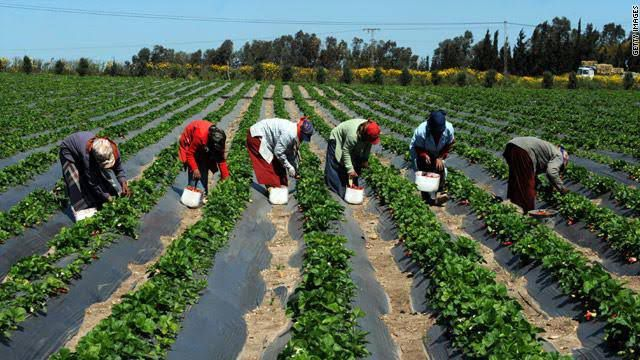

agriculture in Egypt
The agricultural field in Egypt accounts for 14.7% of the gross national product
and employs about 8.5 million people,
accounting for 32% of the Egyptian labor market.
The value of agricultural production amounted to 142.2 billion pounds,
and the value of exports amounted to about 6.79 billion pounds during 2008.
The area of Egypt is one million km 2, which equals 238 million acres,
most of it is desert, only 5.5% is inhabited,
and thecultivated area is 8.6 million acres,
which represents 3 % of the total area of Egypt.

Next